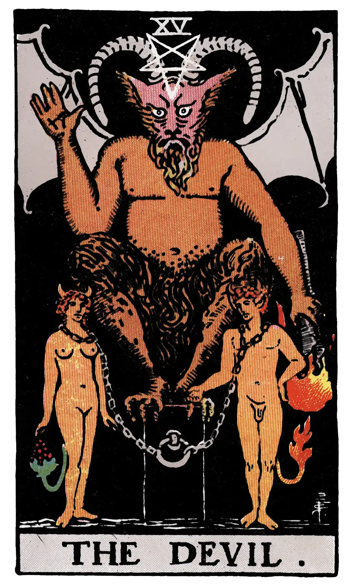

The Devil

A.E.W.
Upright
Ravage, violence, vehemence, extraordinary efforts, force, fatality; that which is predestined but is not for this reason evil.
Reversed
Evil fatality, weakness, pettiness, blindness.
S.L.M.M.
Upright
Fatality for Good
Reversed
Fatality for Evil.
Description
The design is an accommodation, mean or harmony, between several motives mentioned in the first part. The Horned Goat of Mendes, with wings like those of a bat, is standing on an altar. At the pit of the stomach there is the sign of Mercury. The right hand is upraised and extended, being the reverse of that benediction which is given by the Hierophant in the fifth card. In the left hand there is a great flaming torch, inverted towards the earth. A reversed pentagram is on the forehead. There is a ring in front of the altar, from which two chains are carried to the necks of two figures, male and female. These are analogous with those of the fifth card, as if Adam and Eve after the Fall. Hereof is the chain and fatality of the material life.
The figures are tailed, to signify the animal nature, but there is human intelligence in the faces, and he who is exalted above them is not to be their master for ever. Even now, he is also a bondsman, sustained by the evil that is in him and blind to the liberty of service. With more than his usual derision for the arts which he pretended to respect and interpret as a master therein, Éliphas Lévi affirms that the Baphometic figure is occult science and magic. Another commentator says that in the Divine world it signifies predestination, but there is no correspondence in that world with the things which below are of the brute. What it does signify is the Dweller on the Threshold without the Mystical Garden when those are driven forth therefrom who have eaten the forbidden fruit.
Additionally
Death. The method of presentation is almost invariable, and embodies a bourgeois form of symbolism. The scene is the field of life, and amidst ordinary rank vegetation there are living arms and heads protruding from the ground. One of the heads is crowned, and a skeleton with a great scythe is in the act of mowing it. The transparent and unescapable meaning is death, but the alternatives allocated to the symbol are change and transformation. Other heads have been swept from their place previously, but it is, in its current and patent meaning, more especially a card of the death of Kings. In the exotic sense it has been said to signify the ascent of the spirit in the divine spheres, creation and destruction, perpetual movement, and so forth.